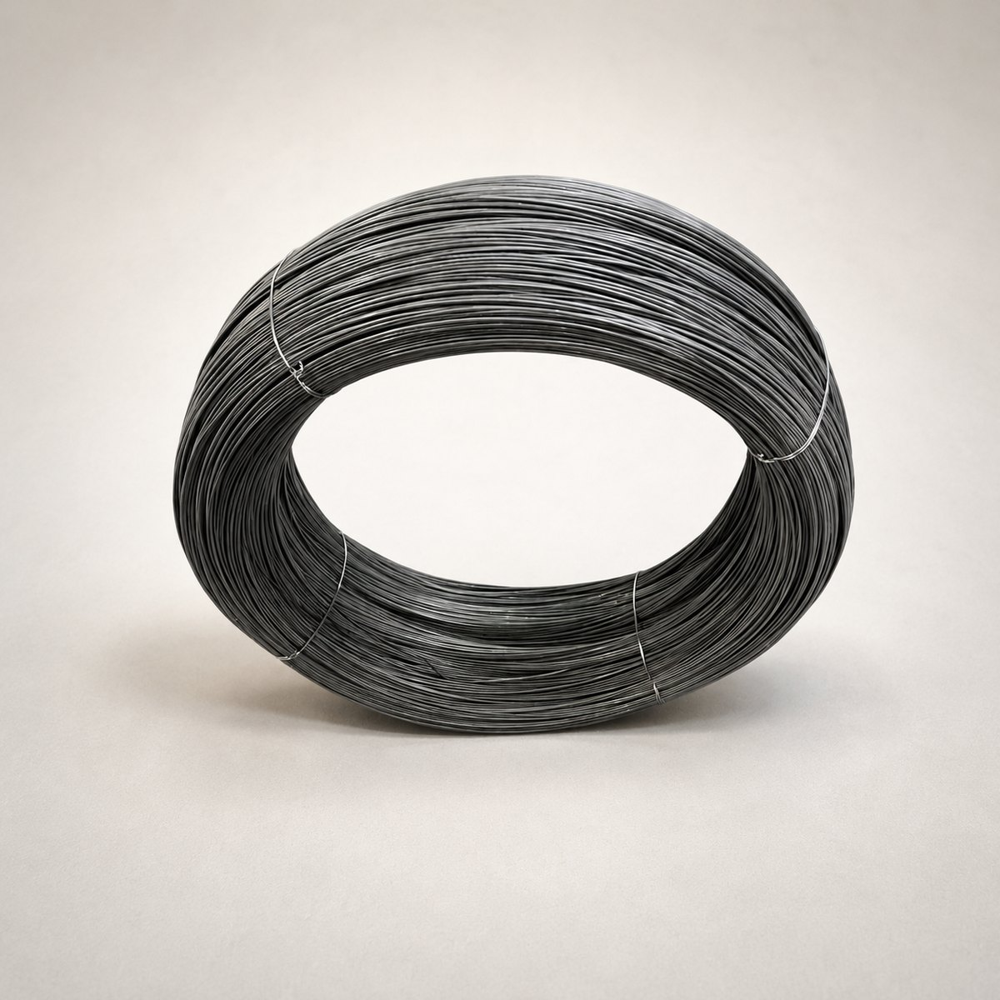
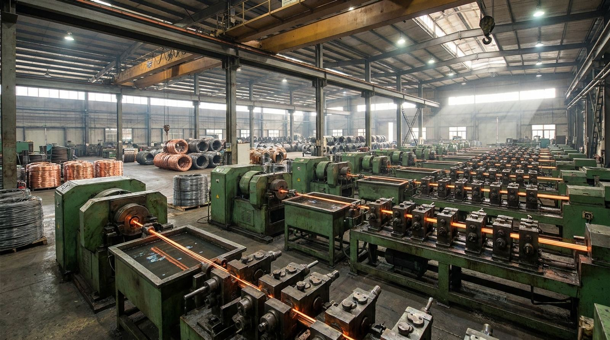

Wire that holds industries together.
Seven grades, drawn and spooled at our own plant outside Mumbai, every reel lot-tested before it leaves the floor.
Corrugated boxes, book binding, offset printing, export packaging, pharmaceutical cartons, agro and produce crates, textile packaging, furniture cartons.
Two ranges, one plant.
Fourteen products in two ranges: flat wire that closes a carton, round wire that goes into everything else. Both drawn from our own rod at Waliv, which is why a section holds from the first metre of a reel to the last.

Stitching
wires.
The wire that closes the box. Corrugated cartons, books, cheque books and printed work, stitched at machine speed, from a spool that has to feed without a snatch.
- G.I.
- Rust resistant
- Power G.I.
- Copper coated
- Stainless steel
- Pure brass
- Pure copper

Steel
wires.
Drawn to temper, not to a nominal size. Hard, half-hard, annealed and zinc-coated wire for nails, fasteners, mesh, springs and bundling, with chemistry and tensile stated for each.
- H.B.
- H.H.B.
- Annealed
- Binding
- Baling
- High carbon
- G.I.
Rope wire, spring steel, hair pin wire and wire nails are drawn on the same benches, outside the two ranges. See what else we make →
Rod to reel, under one roof.
Seven operations, none of them subcontracted. Every one of them is a place where a stitching wire either holds its section or stops holding it.

Rod intake
Checked for cast and surface defect before it's allowed onto the floor.
Descaling & drawing
Successive draw passes down to the target round diameter.
Annealing
Relieves work hardening, which is what gives a clean, cracking-free clinch.
Electroplating
Zinc or copper deposited to the coating weight each grade calls for.
Flattening
Rolled to its flat section, gauged continuously for thickness and width.
Precision spooling
Level winding onto 2–25 kg reels, because bad winding causes the snatch operators blame on the wire.
Lot testing
Section, tensile and bend checked lot by lot, retained against the reel number.
Specify it yourself.
The two questions every buyer asks us, both now answerable in ten seconds.
Cost per pin
Brass looks seven times dearer than G.I. on the price list. Priced per stitch, against the value of the carton it closes, the comparison usually reverses. Run your own numbers.
Open the calculator FinderMachine compatibility
Insun, Gods Will, MEPL, Bielomatik, ECH, Joy Dzign or a foot stitcher. Pick your head and we will tell you the gauges it runs, the spool it takes and the grade we would put on it.
Open the finderTested, lot by lot.
A stitching wire fails quietly. It does not snap in front of you. It drags, it clinches short, it rusts through a carton eight weeks after it left your plant. The only defence is measurement, recorded.
| Test | Method | Recorded |
|---|---|---|
| Thickness | Micrometer, 5 points per reel | Per reel |
| Width | Micrometer, 5 points per reel | Per reel |
| Tensile strength | Universal testing machine | Per lot |
| Elongation | Universal testing machine | Per lot |
| Coating weight | Strip and weigh | Per lot |
| Coating adhesion | Mandrel wrap | Per lot |
| Bend / clinch | Reverse bend to fracture | Per lot |
| Spool wind | Visual, cross-over inspection | Per reel |
Test values are retained against reel number for traceability.
What we know, written down.
Twenty years of answering the same questions on the phone. Now answered properly, once, in public.
All articlesG.I. vs brass stitching wire
The costliest wire on the price list, and why it is often the cheapest carton. Full cost breakdown.
Read GuideChoosing stitching wire gauge
Board type, head rating and clinch quality, and how the three interact, with a selection table.
Read TroubleshootingWhy stitching wire breaks
Nine causes, ranked by how often we actually find them. Only two are the wire's fault.
Read ExportWire for export packaging
Sea freight, container condensation and the rust claim that arrives four months after shipment.
ReadTell us what you need to stitch.
The box, the head and the month it has to survive. We will come back with a grade, a gauge, a spool format and a price per kilogram.
Contact us.
First, tell us who you are